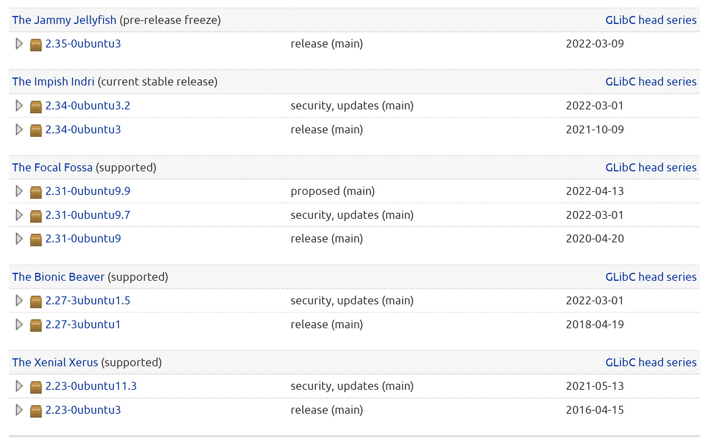
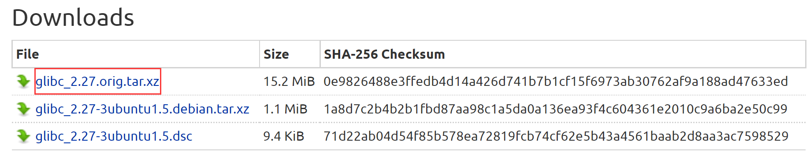
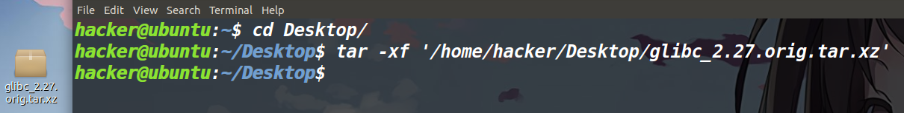
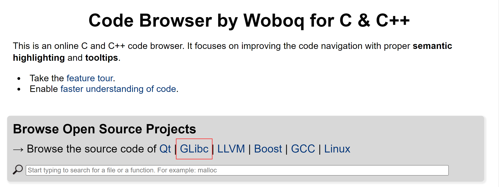
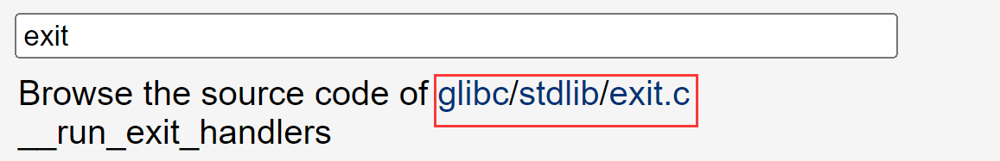
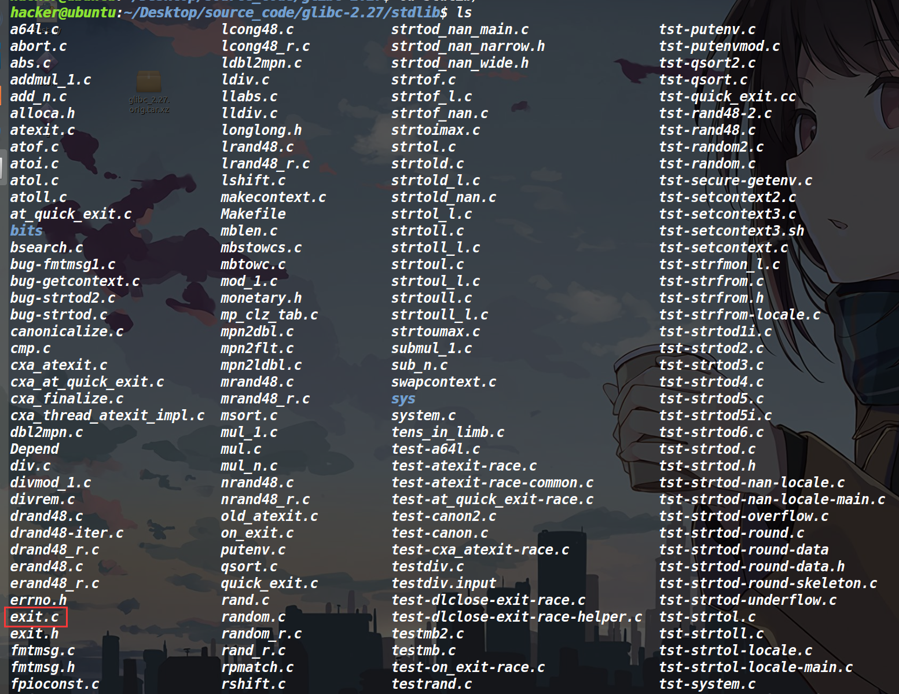
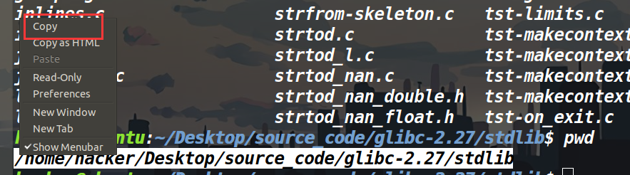
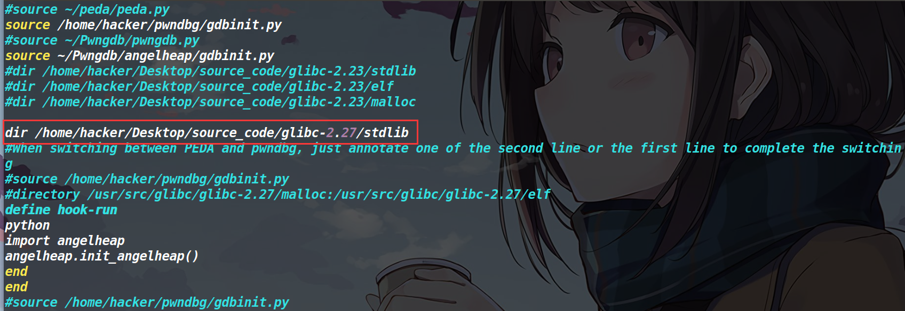

关于gdb源码调试环境搭建
有时候我们要去追踪一些函数或是数据，需要用gdb动态调试并去结合着源码分析。下面介绍一下gdb源码调试的环境如何搭建
glibc源码下载
glibc源码可以在下面这个链接下载
https://launchpad.net/ubuntu/+source/glibc/ |

选择需要的glibc版本，我以2.27-3ubuntu 1.5为例

选择这个最大的文件，下载。
然后拖到ubuntu里面解压
tar -xf filename |

新建一个大的文件夹，用来存放各个版本的glibc，然后进入新下载的glibc，ls看一下发现东西都在里面。然后我们需要去找源码所在的文件夹。

找一下函数所在的源文件
比如我现在想进行exit源码调试，先去下面这个网站搜一下exit源码在哪个文件里面。

进去之后，搜索想找的函数，然后就可以看到它所在的文件。发现exit.c在stdlib文件中。

我们去看一下，果然是在stdlib中发现了exit.c

配置.gdbinit
然后pwd，复制一下路径。

然后去用户目录下输入
vim .gdbinit |
然后输入
dir 刚才复制的路径 |
效果如下

最后保存一下就ok了。
然后gdb继续调试elf程序即可，等进入你装载进去的文件之后，就会自动展示glibc源代码。
最后效果
效果如下：

PS：如果调试其他函数没有出现源码，就说明没有导入成功对应的代码源文件，另外就是调试不同的程序，对应的glibc版本不要选错了。
参考博客：
本博客所有文章除特别声明外，均采用 CC BY-NC-SA 4.0 许可协议。转载请注明来自 ZIKH26's Blog！
评论